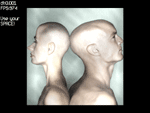

Пример 05 - Использование сетки искажения
В этом примере мы научимся как использовать сетку искажения, техника, позволяющая создавать
эффекты типа воды, линз, скручивания страницы, различные изгибы и даже морфинг в реальном времени. В
этом примере мы используем статическую текстуру, но вы можете в своей игре нарисовать в текстуру
целую сцену, используя цель рендеринга и затем вывести на экран с помощью сетки искажения, чтобы
достичь прикольных эффектов в реальном времени.

Для начала мы подключим требуемые заголовки и объявим переменные для работы с нашей текстурой и
сеткой искажения:
#include <hge.h>
#include <hgedistort.h>
#include <math.h>
HGE *hge = 0;
HTEXTURE tex;
hgeDistortionMesh *dis;
Затем мы объявим несколько констант, которые нам потребуются. Здесь мы зададим разрешение сетки и
положение на экране:
const int nRows=16;
const int nCols=16;
const float meshx=144;
const float meshy=44;
В FrameFunc (функции кадра) нам тоже понадобятся перменные. Некоторые из них нужны для работы
со временем и остальные для вычисления перемещений:
float dt;
static float t=0.0f;
int i, j, col;
Ну, вот здесь, самая хитрая часть. Чтобы анимировать нашу сетку, вычислим ее перемещение и цвета,
основываясь на времени, которое прошло с предыдущего обновления:
dt=hge->Timer_GetDelta();
t+=dt;
for(i=0; i<nRows; i++)
for(j=1; j<nCols-1; j++)
{
dis->SetDisplacement(j, i, cosf(t*5+j/2)*15,0,HGEDISP_NODE);
col=int((cosf(t*5+(i+j)/2)+1)*35);
dis->SetColor(j, i, 0xFF<<24 | col<<16 | col<<8 | col);
}
И наконец, мы рисуем сетку на экране:
hge->Gfx_BeginScene();
hge->Gfx_Clear(0);
dis->Render(meshx, meshy);
hge->Gfx_EndScene();
В функции WinMain мы должны загрузить текстуру и проинициализировать сетку:
tex=hge->Texture_Load("texture.jpg");
dis=new hgeDistortionMesh(nCols, nRows);
dis->SetTexture(tex);
dis->SetTextureRect(0, 0, 512, 512);
dis->SetBlendMode(BLEND_COLORADD|BLEND_ALPHABLEND|BLEND_ZWRITE);
dis->Clear(0xFF000000);
И в конце приложения, необходимо удалить текстуру и сетку из памяти:
delete dis;
hge->Texture_Free(tex);
Вуаля! Насколько все просто.
Полный исходный код с детальными комментариями для этого примера можно найти в директории tutorials\tutorial05.
Требуемые медиа файлы можно найти в директории tutorials\precompiled.
|